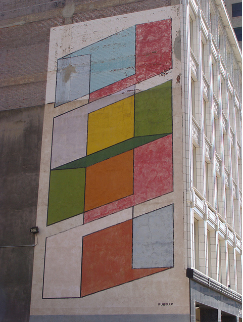

Now (too late), a question emerges with broad implications for the city of art: who, finally, was responsible for Color Cubes?
New Detroit, Inc., which commissioned and financed it? David Rubello, who created it? Sharon Madison, who bought the building onto which it was painted? Those of us who admired it but watched it weather?
See SHARON MADISON , NEW DETROIT , PUBLIC ART , and DAVID RUBELLO